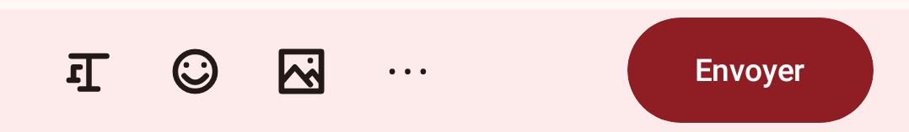
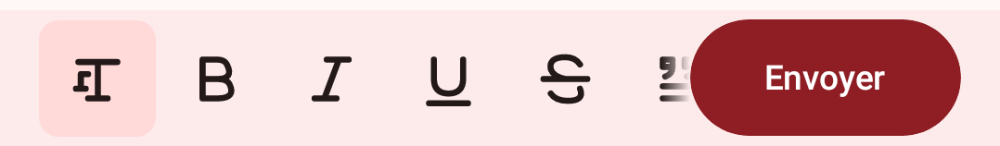

Épaisseur du trait des icônes
Les 29 icônes de l'éditeur (Format, gras, italique, souligné, barré, smileys, image, options…) sont dessinées en trait de 2,5 sur une grille de 24. C'est la règle de l'ADR-015 (juin 2026), choisie après un retour de nicko qui trouvait la flèche retour trop fine. Les icônes Material standard tournent autour de 2 en graisse normale, c'est pourquoi tout paraît en gras, et le B ne se distingue plus de I, U et S.
Les tracés ci-dessous sont ceux du code de la 0.69.11, redessinés en SVG avec la largeur choisie. La géométrie des barres et les couleurs viennent du rendu Roborazzi.
Barres de l'éditeur
À 1×, 1 dp = 1 pixel d'écran : c'est la taille perçue sur le téléphone. Le zoom aide à juger le trait.
Toutes les icônes, par épaisseur
La colonne surlignée est l'état actuel. La dernière ligne montre des icônes Material Symbols du reste de l'app (barre de navigation), pour comparer.
Contrôle : rendu réel actuel (Roborazzi, trait 2,5)


Portée à choisir avec l'épaisseur : les icônes de l'éditeur seulement, ou toute la famille de l'ADR-015 (flèche retour, chevrons, crayon). Le B peut aussi garder un trait plus épais que les autres pour rester lisible comme « gras ».